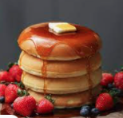

Saturday Pancakes
"Saturday = Preston Pancakes in the Park! 9:00 a.m. Saturday at the city park pavilion."
-

-
Travel & Weather
Your Weather Paradise is here!
- ☰
Preston, Idaho
Weather Summary
Currently:
High:
Wind Chill:
Humidity:
Windspeed:
°F
%
mph
5 Day Forecast
Idaho: A Trout Fishing Paradise
By Steve Stuebner
It’s a gorgeous day in Swan Valley, Idaho — perfect for floating and fishing the South Fork of the Snake River. Temps are in the 80s, the skies cobalt blue, and I see a bald eagle flying overhead as we turn the corner on the South Fork and tuck into a willow-lined side channel, an oxbow of the big river.
In the secluded side channel, mayflies are dancing on the water’s surface, but I’m fishing with a Dave’s hopper since it’s warm and sunny. Throw the Yellowstone fine-spotted cutthroats a big hunk of meat! What the heck!
I cast about 30 feet downriver to a subtle eddy line with my fly rod. The brilliant sunlight sparkles on the water and lights up the yellow and red body of the hopper. And then I see a big cut rise up high and gobble that fly. I set the hook, yelling “fish on!” to my partner. I enjoy a fun fight in the side channel. I bring him toward my net, and then I hear one of our dogs growl. I look up and it’s a bull moose with huge antlers on shore. Ah yes, I say to my fishing partner, gotta love the South Fork! Gotta love Idaho!
The South Fork is one of the top blue-ribbon trout streams in the state of Idaho, if not the nation. The same can be said of the nearby Henrys Fork, world-renowned for its challenging dry fly wade fishing for big rainbow trout. Located in the heart of the Northern Rockies, Idaho is chock full of high-quality trout streams, hundreds of miles of them.
But where do you start? Where to begin? In this story on Idaho trout waters, we’ll recommend five sure-fire places to catch trout — on a do-it-yourself level, or in the lap of luxury on a guided trip.